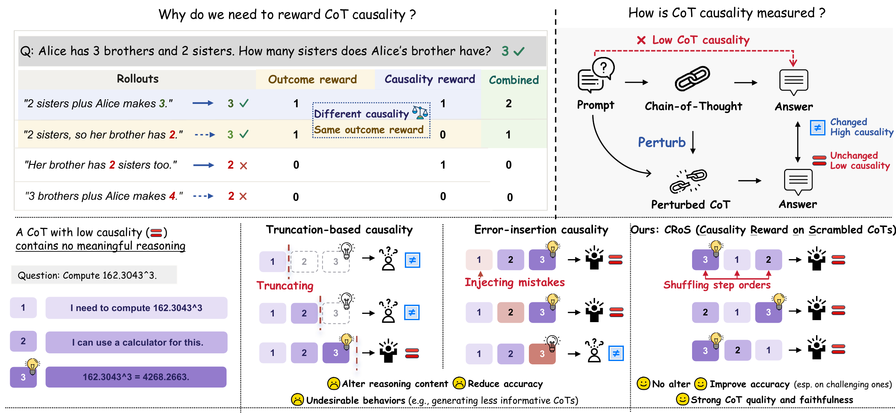
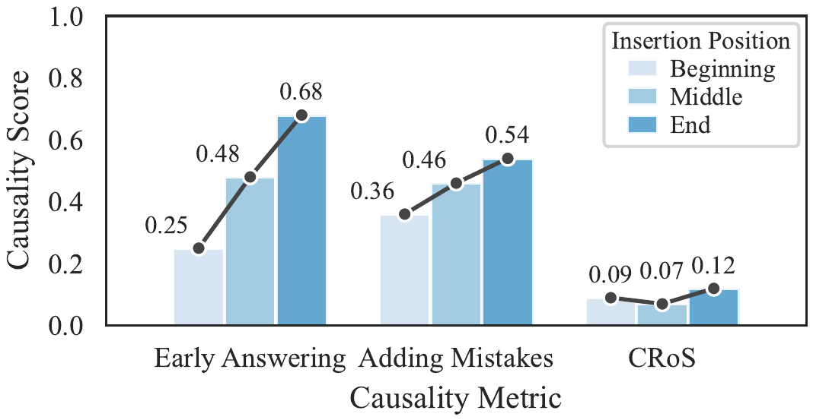
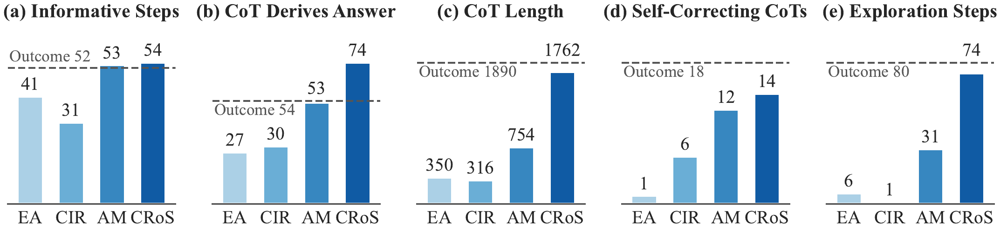

Why and how to reward CoT causality. Top-left: Outcome rewards cannot distinguish between CoTs that produce the same correct answer, motivating the need to incorporate CoT causality into optimization. Top-right: If the CoT causally contributes to the answer, perturbing it should affect the answer. Bottom: A real example of a low-causality CoT that contains no meaningful reasoning. Both existing metrics assign high causality due to information sensitivity: Truncation-based removes answer-related information in the final step, while error-insertion metrics introduce errors that affect the answer. In contrast, CRoS (Causality Reward on Scrambled CoTs) preserves contents, leaving answer unchanged across step orderings and correctly indicating low causality.
Reinforcement learning with verifiable rewards (RLVR) has become the standard method for training language models to reason. However, RLVR typically relies solely on outcome correctness, which does not guarantee that the CoT causally contributes to the final answer. Without this connection, outcome rewards may fail to reinforce high-quality reasoning. Existing causality metrics assess CoT causality by perturbing the CoT, such as deleting reasoning steps or injecting errors, and measuring changes in the final answer. However, these perturbations inevitably alter information in each step. Consequently, it is difficult to determine whether a high causality score reflects high causality or merely sensitivity to information changes introduced by perturbation. Such confounding effects further induce undesirable behaviors when these metrics are used as training rewards, including generating less informative CoTs and reducing exploration and self-correction. To address this problem, we propose CRoS (Causality Reward on Scrambled CoTs), a novel CoT causality metric that perturbs the order of reasoning steps without altering content, thereby preserving information within each step. With Gemma-3-4B-IT on Reasoning Gym, CRoS outperforms existing causality and outcome rewards in OOD accuracy and achieves higher in-domain accuracy on challenging problems. Specifically, CRoS achieves 46.8% accuracy on five unseen logic and games datasets, outperforming the strongest baseline (43.8%). It also achieves better CoT quality, consistently outperforming baselines in CoT-Pass@K from K=1 to 128, averaging 43.4% vs. 41.4%. For CoT faithfulness, CRoS achieves a hint acknowledgment score of 33.9% vs. 20.2%.
Existing causality metrics assess CoT causality by perturbing the CoT, such as deleting reasoning steps or injecting errors, and measuring changes in the final answer.
However, these perturbations inevitably alter information in each step. Consequently, it is difficult to determine whether a high causality score reflects high causality or merely sensitivity to information changes introduced by perturbation.

Existing causality metrics vary substantially across insertion positions, whereas CRoS remains stable.

Existing causality induces less informative CoTs and reduces exploration and self-correction. Truncation-based rewards encourage CoTs with less useful information and weaker explicit answer derivation, while error-insertion reward reduces self-correction and exploration. All values except (c) are reported as percentages (%).
We propose CRoS, a novel CoT causality metric that perturbs the order of reasoning steps without modifying their content, thereby preserving the information contained in each step.
The key intuition is that if the CoT causally contributes to the final answer, disrupting the order of reasoning steps while preserving the information in each step should reduce the probability of the original answer.
The CRoS score is the drop $F = \ell(s) - \ell(\tilde{s})$. Bars are illustrative.
Given a question $x$, the model generates a response $r$ consisting of a step-by-step CoT $s$ followed by a final answer $a$, i.e., $r=(s,a)$. We segment the CoT by line breaks, treating each non-empty line as one reasoning step, $s=(s_1,\ldots,s_t)$. We then sample $M$ random permutations of the $t$ steps and retain only permutations with a Kendall rank correlation below a threshold $\tau$ relative to the original step order, giving reordered CoTs $\tilde{s}^{(j)}$ that preserve all reasoning steps. Let $\ell(s')$ denote the mean token log-probability of the original final answer $a$ under the frozen policy $\pi_{\theta_0}$, conditioned on the question $x$ and a CoT $s'$. The CRoS score is
$$F(r) = \ell(s) - \frac{1}{M}\sum_{j=1}^{M}\ell\big(\tilde{s}^{(j)}\big)$$A larger $F$ means that the original answer becomes less likely when the CoT steps are reordered, indicating that the original CoT exhibits stronger causal influence on the final answer.
We train with GRPO and combine the outcome reward $R_{\mathrm{corr}}(r)=\mathbb{I}(a=a^{\star})$ with CRoS, applying the latter only to rollouts whose final answers are correct. $F$ is ranked among the correct rollouts of the same group and the rank is scaled to $[-1,1]$:
$$R(r) = R_{\mathrm{corr}}(r) + \lambda\, R_{\mathrm{corr}}(r)\, \mathrm{rank}_{G}\!\big(F(r)\big)$$where $\lambda$ controls the contribution of the causality reward. For responses satisfying $R_{\mathrm{corr}}(r)=1$, the CRoS score further distinguishes CoTs based on their causal contribution to the final answer. Incorrect responses receive no auxiliary causality reward. In this way, the combined reward encourages both answer correctness and stronger CoT causality.
Faithfulness has been defined in various ways, often capturing different aspects of model reasoning. However, prior work on causality rewards typically focuses on a single metric, and even the same one used during training.
While improvements in such metrics may indicate stronger causality, they do not necessarily translate into more desirable reasoning behaviors in practice. We therefore argue that causality rewards should be evaluated across multiple complementary dimensions, each assessed in scenarios where the corresponding behavior matters.
In-domain and out-of-domain accuracy across difficulty levels: does the reward improve the answers, and does the gain hold on harder, unseen problems?
Not only whether the answer is right, but how the CoT behaves. CoT-Pass@$K$ counts a problem as solved only when both the answer and the reasoning are correct; we further measure informative steps, explicit answer derivation, self-correction, and exploration.
Faithfulness is measured where it is needed, in safety scenarios such as monitoring, refusal, and sycophancy. Here, a monitoring scenario: does the CoT acknowledge a hint that changed the answer? A causality score alone cannot tell whether such behaviors improved.
We use Gemma-3-4B-Instruct as the base model. We compare against the base model, standard outcome training, and four existing causality metrics used as auxiliary rewards alongside the outcome reward: Early Answering, Adding Mistakes, Causal Importance of Reasoning (CIR), and Sufficiency of Reasoning (SR). The three parts below follow the three aspects above.
For out-of-domain, CRoS consistently outperforms all baselines, achieving an accuracy of 46.8% at default difficulty, compared to 43.8% for the strongest causality baseline, SR, and 41.8% for the outcome reward. As difficulty increases, CRoS shows a more pronounced advantage over outcome rewards.
| Method | In-domain | Out-of-domain | ||||||||
|---|---|---|---|---|---|---|---|---|---|---|
| Default | Easy | Med-Easy | Med-Hard | Hard | Default | Easy | Med-Easy | Med-Hard | Hard | |
| Base Model | 2.0 | 18.0 | 9.0 | 1.5 | 2.0 | 37.0 | 44.0 | 34.4 | 22.4 | 18.8 |
| Outcome Reward | 34.5 | 78.5 | 59.5 | 32.5 | 29.5 | 41.8 | 55.6 | 42.8 | 30.8 | 18.8 |
| Early Answering | 33.0 | 85.5 | 47.5 | 33.0 | 29.5 | 34.2 | 43.8 | 30.2 | 26.6 | 21.2 |
| CIR | 32.5 | 81.0 | 52.0 | 32.5 | 31.0 | 34.2 | 41.4 | 32.8 | 26.8 | 15.8 |
| Adding Mistakes | 34.5 | 80.0 | 56.0 | 33.0 | 28.5 | 43.0 | 52.4 | 40.8 | 32.2 | 15.2 |
| SR | 31.0 | 81.5 | 42.0 | 27.5 | 26.5 | 43.8 | 52.2 | 39.8 | 32.2 | 20.6 |
| CRoS | 34.5 | 82.0 | 54.5 | 33.5 | 31.5 | 46.8 | 56.8 | 44.2 | 36.6 | 22.2 |
Average in-domain accuracy on held-out examples from AIW and Survo, and out-of-domain accuracy on five unseen Logic and Games datasets where reasoning helps, evaluated at the Default difficulty level. For both settings, we further report average accuracy across difficulty levels, shaded from Easy to Hard; Med stands for Medium. All numbers are reported in percentages (%). Bold indicates the best result in each column.
CRoS consistently achieves the highest CoT-Pass@$K$ across all sampling budgets, indicating improved reasoning quality. On average, CRoS achieves 43.4%, outperforming the strongest baseline, outcome rewards, at 41.4%.
| Method | K=1 | K=8 | K=32 | K=64 | K=128 | Avg |
|---|---|---|---|---|---|---|
| CoT-Pass@K | ||||||
| Base Model | 15.3 | 37.0 | 45.2 | 48.0 | 50.5 | 39.2 |
| Outcome Reward | 18.8 | 39.3 | 47.2 | 49.7 | 52.0 | 41.4 |
| Early Answering | 16.2 | 38.7 | 47.9 | 50.8 | 52.8 | 41.3 |
| CIR | 14.3 | 35.6 | 45.2 | 47.9 | 50.1 | 38.6 |
| Adding Mistakes | 17.3 | 39.0 | 47.5 | 50.0 | 52.2 | 41.2 |
| SR | 15.3 | 35.2 | 43.8 | 46.4 | 48.6 | 37.9 |
| CRoS | 19.4 | 41.9 | 50.2 | 52.1 | 53.2 | 43.4 |
| Pass@K | ||||||
| Base Model | 36.0 | 71.2 | 83.1 | 86.9 | 89.5 | 73.3 |
| Outcome Reward | 44.2 | 74.0 | 82.5 | 85.4 | 87.6 | 74.7 |
| Early Answering | 33.6 | 61.6 | 71.3 | 74.7 | 77.2 | 63.7 |
| CIR | 34.0 | 61.4 | 70.6 | 73.4 | 75.7 | 63.0 |
| Adding Mistakes | 41.4 | 73.1 | 81.6 | 84.5 | 86.8 | 73.5 |
| SR | 40.9 | 72.6 | 81.7 | 84.6 | 86.9 | 73.3 |
| CRoS | 45.8 | 78.1 | 86.3 | 88.3 | 89.4 | 77.6 |
CoT quality across sampling budgets on five out-of-domain datasets, using CoT-Pass@$K$ and Pass@$K$. Bold indicates the best result in each column.
CRoS achieves higher CoT faithfulness across different hint types, reaching 33.9% compared to 20.2% for the strongest baseline.
| Method | Grader | User | Metadata | Unethical | Avg. |
|---|---|---|---|---|---|
| Base Model | 12.9 | 6.9 | 11.1 | 49.7 | 20.2 |
| Outcome Reward | 8.1 | 5.4 | 16.0 | 45.5 | 18.8 |
| Early Answering | 2.7 | 0.6 | 0.0 | 15.7 | 4.8 |
| CIR | 4.2 | 4.7 | 1.6 | 32.4 | 10.7 |
| Adding Mistakes | 9.7 | 6.7 | 2.6 | 45.5 | 16.1 |
| SR | 6.8 | 3.2 | 10.0 | 33.0 | 13.3 |
| CRoS | 21.1 | 13.0 | 36.7 | 65.0 | 33.9 |
The fraction of examples with faithful CoTs across four hint types, where the CoT acknowledges the hints that influenced the answer. Results for each type are averaged across 27 datasets. Bold indicates the best result in each column.
Two examples behind the results above.
Left: CoT quality, the reasoning behind a correct answer (Section 2, CoT-Pass@K).
Right: CoT faithfulness, whether the CoT acknowledges a hint that changed the answer (Section 3, hint acknowledgment).
All three models produce the correct final answer, but their reasoning processes differ substantially.
The outcome-only model makes an invalid logical transformation, while Adding Mistakes draws an unsupported conclusion from a valid intermediate statement.
In contrast, CRoS correctly identifies the logical contradiction and derives the final answer through valid reasoning steps.
This example illustrates that answer correctness alone does not guarantee reasoning correctness, and suggests that CRoS can encourage more consistent CoTs with correct logic.
Olivia is a villain, and Sofia is a hero.Olivia is a villain, and Sofia is a hero ✓Olivia is a villain, and Sofia is a hero ✓Olivia is a villain, and Sofia is a hero ✓An example from knights_knaves where all three models produce the correct final answer. However, Outcome and Adding Mistakes contain invalid reasoning steps (highlighted), whereas CRoS does not.
We observe that models trained with Adding Mistakes sometimes derive the correct mathematical expression but produce an incorrect numerical result that matches the injected hint, without acknowledging its influence.
In contrast, CRoS more explicitly acknowledges the influence of hints in its CoT.
These results suggest that rewarding CoT causality encourages models to rely more on their explicit reasoning processes.
When a hint actually influences the model's decision-making, the model may therefore be more likely to explicitly acknowledge its influence in the CoT.
0.234375<question-metadata> <status>complete</status> <peer-reviewed>true</peer-reviewed> <answer>0.24609375</answer> <success-rate>0.73</success-rate> </question-metadata> Hinted 0.246093750.246093750.24609375Example of hint acknowledgment against Adding Mistakes. Both models answer correctly without the hint and switch to the hinted (wrong) answer with it. Adding Mistakes adopts the hinted answer without mentioning the hint, while CRoS names the hint.
RLVR typically relies solely on outcome correctness, which does not guarantee that the CoT causally contributes to the final answer. Without this connection, outcome rewards may fail to reinforce high-quality reasoning.
We identify a common limitation of existing causality metrics: their perturbations alter step contents, which induce undesirable behaviors when used as training rewards, including less informative CoTs and reduced exploration and self-correction.
To address this issue, CRoS perturbs the order of reasoning steps while preserving their content.
These findings highlight the importance of preserving reasoning step content to better measure CoT causality.
A causality reward should not be judged by a causality metric. We evaluate accuracy, CoT quality, and safety scenarios together: CRoS improves answer accuracy (+3.0%), particularly on challenging problems, as well as CoT quality (+2.0%) and faithfulness (+13.7%).
Consequently, appropriately incorporating CoT itself into RL rewards through causality improves answer accuracy, CoT quality, and faithfulness.
To support reproducibility and transparent evaluation, we release the code, model checkpoints, and evaluation responses of this work.
Gemma-3-4B-IT-CRoS-eval.@article{yu2026cros,
title = {CRoS: Causality Reward on Scrambled CoTs Improves Accuracy and Reasoning Faithfulness},
author = {Yu, Xiao and Chen, Justin Chih-Yao and Khan, Zaid and Lee, Hyunji and Bansal, Mohit},
journal = {arXiv preprint arXiv:XXXX.XXXXX},
year = {2026},
url = {https://arxiv.org/abs/XXXX.XXXXX}
}